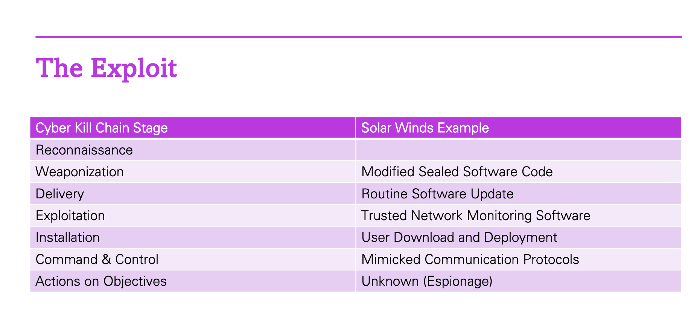
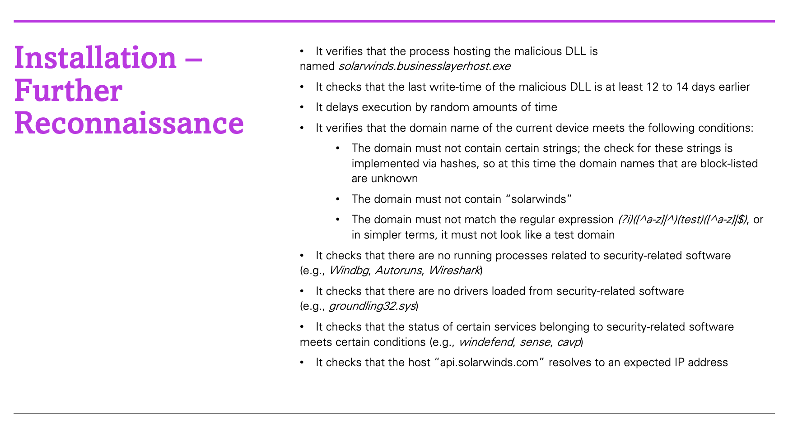
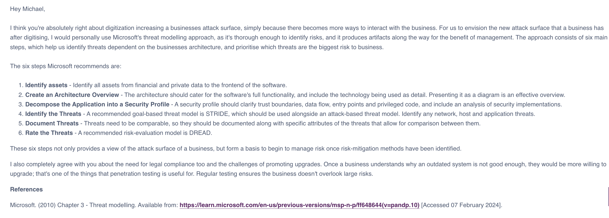
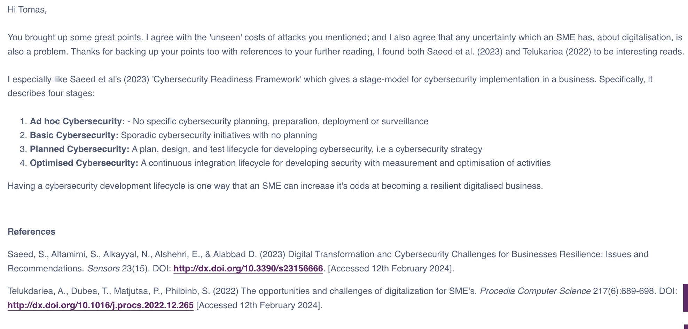
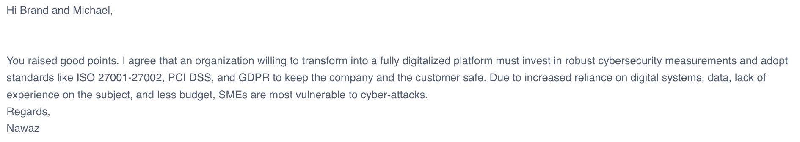

Week 3
SolarWinds Hack - A Case Study
This week I reviewed the huge SolarWinds hack reported in 2020, examining vulnerabilties that lead to it, and how those vulnerabilities might have been mitigated. First, I modelled the SolarWinds hack using a stage-based attack model known as the Cyber Kill Chain model, which is widely discussed in academia. This way I could critically examine the model. The purpose of modelling the hack into stages is to identify vulnerabiltiies that were exploited, that might occur in sequence. Below is the resulting outline of the SolarWinds attack.
Through modelling the attack, I began to find a limitation of the Cyber Kill Chain model for my purpose. The fixed ordering of the model was not flexible enough to fully capture all important details of the hack that correspond to vulnerabilities. For example, during the SolarWinds attack, once a payload had been delivered to a machine, a second round of reconnaissance occured to learn more about the machine hosting the payload. We could argue that it was not actually reconnaissance as reconnaissance happened at the start of the whole hack to identify the initial supply chain attack, but what happened later was similar to reconnaissance no doubt. The point here is that the Cyber Kill Chain model has room for intepretations that cannot be fully realised in it's current state. Is it really impossible for a hack to consist of repeated stages? Therefore, from my experience, I would give more value to a component-wise model of hacks, where stages are represented by components on a diagram, and can be arranged with much more flexibiility. This idea takes inspiration from UML, which provides freedom by having well defined entities and relationships between them.
Below is more detail about the SolarWinds hack payload and the tests it did before installing itself on a machine.
Next, I began to link each stage to vulnerability mitigations. However, I found this challenging. I had identified a couple of mitigations, but I needed a better mitigation model to be more exhaustive of the range of mitigations that we could use. Eventually, I found a model of security controls, that I would utilise in future mitigation planning, which includes multiple mitigation tactics that can be considered for each vulnerability, namely; preventative, detective and corrective mitigations.
Digitalisation - What are the Security Implications?
Also, this week we further discussed the security implications of digitialisation, where I focused on stage-based models that SME's can immediately adopt and utilise. These are the responses I gave to my colleagues in response to their own posts about digitialisation:
 Below are two replies I recieved on my own post from last week:
bg22514@essex.ac.uk